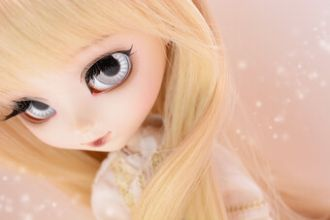
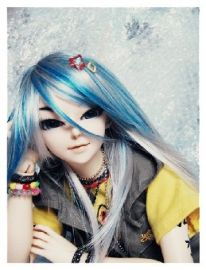
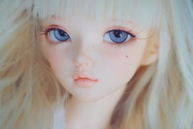

Хүйтэн салхины өөдөөс би дуулнаХүнгүй гудамж яг энд дууснаГэрэл тусна хотруу ууснаСалаа замаас хойш мотор хурдаснаСалхины шилэнд бороо урсана
хайлт
Täysin uupuneina, aamuun valvoneinaKaikki päätetty, jäljellä voimattomuusSilmät kyynelissä, meidän keittiössäIhmetellään, kun rauha nyt laskeutuu

Så let det er i natså let som du gør mig lige nukloden svæver ud af kurssom et mælkebøttefnug
Når vi ligger her i samme seng,Ligger langt væk fra hinanden.Kan du høre mig stille sove ind?Det' som om du er en anden, mmm.
It might seem crazy what I'm about to saySunshine she's here, you can take a breakI'm a hot air balloon, I could go to space
She sees them walking in a straight line, that's not really her style.And they all got the same heartbeat, but hers is falling behind.
Fremmede, hvem er du?Du var her aldrig før så, hvorfor nu?Hvis det kun er leg, så gå hjem.For jeg sænker ik' mit skjold så let igen.
Got my keys got my coat got my shoes onGot my phone got my bag got my nails onYou're here,you're here but I'm still aloneI say goodbye to your shadow

For det er langt igjen å gå,jeg tar beina fatt.Jeg kan gå i mange år,veien virker bratt.
Om du bara kunde förståallt det som jag kännerSnälla babe, va tvungen och gåBesluterna hittar mig självJag vet det finns en väg tillbaks
Boy, you got me stranded Feeling for you And I don't know what to do about it 'Cos you got me stranded Come on and help me through
Sun ennakkoluulos mua pelottaaen uskalla sanoo enää sanaakaansä et tee mitään muuta kun odotat vaanet pääsisit mut taas maahan pudottaa
En osaa sanoo sanaakaanEt kai mun runoutta enää kuulekaanYksi mykkä ja yksi kuuroEi yhteyttä, linja on huono
Silloin luulit et tää on The EndMut ei ollut sun aika tulla osaksi virtaaPäivä taittui eteenpäin, mut se takaraivoon jäi

kylmyys kättelemättä tuli sisällesai mut huonolle päällekun valo hetkeksi jättää pimeeseenkaikki tuntuu onnettomalle
Просто "здравствуй", просто "как дела" -Наверно, так начну при встрече я, А пока смотрю издалека, И слёзы не от ветра в глазах.
Oh Baby, nimm meine Hand,ich hab alles schon gepackt,komm wir beide gehen weg von hier...
Quel vestito da dove e' sbucatoche impressionevederlo indossatose ti vede tua madre lo saiquesta sera finiamo nei guai
Here I go out to sea againThe sunshine fills my hairAnd dreams hang in the airGulls in the sky and in my blue eyeYou know it feels unfair